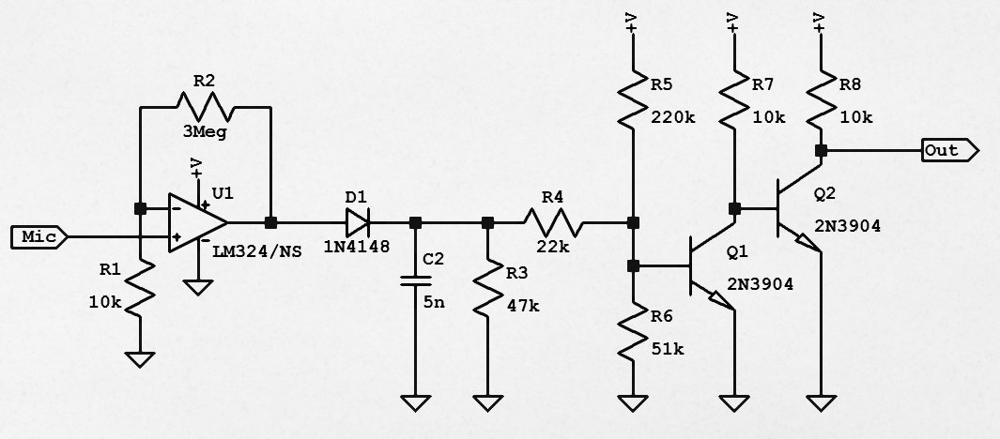
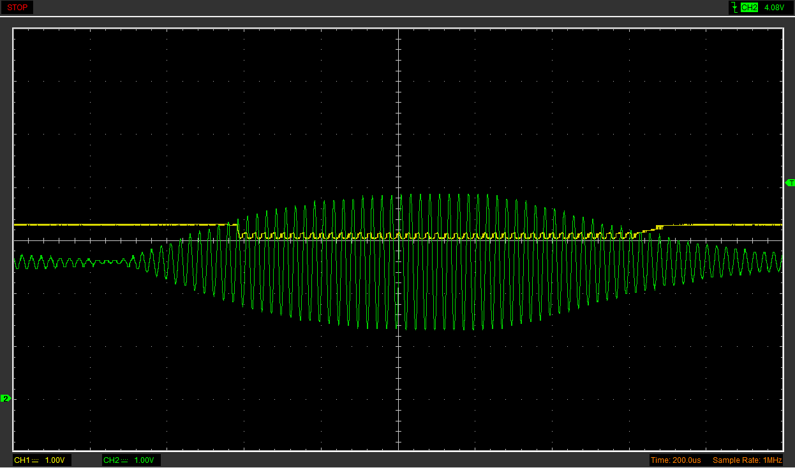
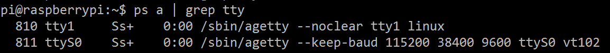

En este artículo describiremos primero analógicamente cómo funcionan transmisor y receptor. Después, ya en el terreno digital, programaremos el firmware del transmisor. En cuanto al receptor, haremos primero un software dedicado y para terminar nos meteremos en el sistema operativo con unas explicaciones un tanto más avanzadas.
Utilizaremos transductores ultrasónicos a 40kHz como los que podéis encontrar en estos módulos para medir distancias. No he encontrado la referencia exacta, pero a la vista se parecen mucho a los que vienen en el datasheet del modelo 400ST160.
| Medidor de distancia por ultrasonidos. Circuito de partida. |
{kind=link}
El transmisor
A la hora de proyectar un circuito para un propósito, considerad que no existe algo así como el mejor. Hay cientos de circuitos que sirven igualmente. A veces el mejor es el que emplea menos componentes. Otras el más económico, aunque más complicado. Podría ser el más duradero, el que obtiene mayor rendimiento a costa de reducir su vida útil, el que menos consume o más amplio rango de alimentación soporta.
Un buen circuito es el que funciona y sirve a nuestros propósitos. Después siempre se puede mejorar. En general, para un aficionado, es aquel que usa los componentes más comunes y por tanto minimiza la compra.
En este artículo quiero centrarme en el receptor, y por esa razón el esquema del transmisor debía ser muy sencillo. Decidí utilizar un microcontrolador PIC 12F386. Este tendrá ya preprogramado el mensaje, y generará la portadora de 40kHz necesaria para activar el altavoz. Utilizaremos modulación ASK (o más concretamente OOK) por ser la más sencilla.
| Esquema eléctrico del transmisor. EyC. |
{kind=link}
El transductor podría requerir más corriente de la que puede suministrar el PIC, para no arriesgarlo lo excitamos mediante Q1 y no directamente, así puedo darle la corriente necesaria sin preocuparme de si será muy alta para el PIC. Otras posibilidades habrían sido una salida push-pull como la que vimos en Cómo funcionan las etiquetas acustomagnéticas o un buffer usando inversores.
A propósito, cuando queráis excitar un led, un relé o cualquier cosa con un transistor NPN en modo conmutación, siempre emisor a tierra y carga al colector. Nunca al revés.
| Conexión de una carga a un transistor NPN. EyC. |
{kind=link}
Un transistor NPN está diseñado para trabajar con tensión de base positiva respecto al emisor. Si colocáramos la carga entre emisor y masa, el emisor ya no estaría a 0V porque la carga tendrá una caída de tensión. Haciendo más positivo el emisor del NPN empeoramos su rendimiento.
Los transductores piezoeléctricos se mueven cuando sienten una diferencia de potencial entre sus patillas. Pero a la vez son muy malos conductores. Si sólo interponemos el piezo entre colector y positivo tendremos un circuito abierto. Si el colector de Q1 no está polarizado no hay paso de corriente, y por tanto tampoco diferencia de potencial entre las patillas del transductor. R2 está para cerrar el circuito. Con un altavoz magnético R2 sería necesaria porque el circuito se cierra a través de la bobina.
C1 es el condensador de desacoplo. Cuando el altavoz empiece a emitir demandará más corriente, eso lo sabemos. Debido a la resistencia del cable de alimentación -sobre todo si es este largo- o de la batería -si esta es débil-, tal incremento de la demanda hará caer la tensión disponible en todo el circuito, también en el integrado. Tener C1 es como tener una fuente de alimentación en miniatura pegada al micro para relajar las fluctuaciones.
En cuanto al cuarzo, si bien el 12F386 tiene un generador de reloj interno hasta 8MHz, yo necesitaba más velocidad para otro proyecto y por ese motivo tuve que usar un cristal de cuarzo externo junto a los condensadores C2 y C3.
Veamos los valores. Si bien matemáticamente se puede calcular el valor óptimo de un componente, en la práctica eso solo sirve como orientación pues raramente usamos el valor exacto.
Para calcular R2 nos apoyaremos en la capacidad del transductor emisor indicada por su datasheet: 2400pF, pero ni siquiera estamos seguros de que ese datasheet corresponda a nuestro modelo. Cuando Q1 corte, el transductor se descargará a través de R2. Dado que la oscilación será a 40kHz (25us de periodo), su valor debe ser tal que permita al altavoz descargarse completamente en este tiempo. Si hacéis la cuenta, una resistencia de 3k3 permitiría a un condensador de 2400pF descargarse un 99% en 24us. Se puede usar, por tanto, cualquier valor inferior a 3k3. Se suele usar 1k. Yo he puesto 220ohm porque en las pruebas daba mejor resultado, pero está por debajo de lo recomendado.
Q1 es de tipo NPN y debe soportar la corriente de colector. Con el valor anterior de R2 asciende a tan sólo 21mA. Usad el más barato que tengáis a mano. El 2N3904, por ejemplo, es muy práctico. Soporta hasta 200mA de corriente de colector y podéis encontrarlos por 1USD las 100 unidades.
R1: Su valor debe ser tan bajo como para saturar Q1 pero lo suficientemente alto como para no exceder la corriente máxima que puede proporcionar una patilla del 12F386: 25mA. La ganancia en corriente mínima garantizada de un 2N3904 es 30 (60 para el rango en que nos movemos y suele ser más de 100 en la práctica). Lo cual nos da para R1 un valor comprendido entre los 172 y 5912 ohm. Por ejemplo 4k7 (con una ganancia de 100, 10k habría servido igualmente).
C1 suele ser de 0.1uF o incluso de 47nF. No es crítico para este circuito, nos vale prácticamente cualquier cosa por encima: 0.1uF, 1, 3.3, 10 y hasta 47 o 100uF.
La máxima frecuencia de reloj para el 12F683 es 20MHz. Este será el valor de XTAL1. C2 y C3 deben tener un valor igual al doble de la capacidad del cristal, pero ese dato pocas veces lo conocemos. Lo típico es usar entre 18 y 33pF. Si nos equivocamos la frecuencia del oscilador será un poco mayor o menor de lo previsto. Lo cual dentro de unos márgenes no es importante en este circuito.
Nuestro transmisor montado sobre una protoboard. Se aprecia el zócalo para el PIC, y el conector ICSP que usaremos para programarlo y para alimentar el circuito. Los cables de la derecha van al altavoz.
| Transmisor montado sobre una placa perforada. EyC. |
{kind=link}
Más abajo hablaremos del firmware.
Ideas para el receptor
Una vez construido (y programado) el transmisor, tomamos el osciloscopio para ver cómo se recibirían esos pulsos en el transductor receptor y qué nivel tienen en función de la distancia.
En amarillo los pulsos transmitidos a 2000 baudios, aproximadamente 0.5ms de duración. Sus bordes están bien delimitados. En verde los pulsos recibidos: los bordes son difusos, llegándose a perder la distinción de dónde acaba un pulso y comienza el siguiente.
| Resonancia indeseada. Impide la transmisión a mayor velocidad. EyC. |
{kind=link}
¿Por qué ocurre esto? Porque transmisor y receptor son cavidades resonantes de Helmholtz con un factor de calidad muy elevado. Es decir, están ajustados para transmitir y recibir eficazmente una frecuencia de 40kHz, y sólo de 40kHz con un margen muy estrecho.
Eso tiene cosas buenas y cosas malas. Lo bueno es no captar prácticamente ningún ruido de ambiente, lo cual nos va a ahorrar filtrar la señal recibida. Pero lo malo es que el ancho del canal es muy limitado, tan limitado que sólo cabe esa frecuencia. Como consecuencia, la oscilación no comienza inmediatamente ni tampoco se extingue tras cesar la excitación.
Los pulsos se solapan con los siguientes. Aún se está extinguiendo la resonancia cuando ya ha comenzado el siguiente pulso. Eso se llama interferencia entre símbolos (ISI) y es propio de los canales con ancho de banda muy estrecho. Una cavidad resonante es, si me lo permitís, un caso extremo de ancho de canal limitado.
Esperar a que la señal del símbolo previo se debilite lo suficiente significa bajar hasta una velocidad de transmisión más lenta, por ejemplo 1000 baudios.
| La máxima velocidad de transmisión no va mucho más allá de 1000 baudios. EyC. |
{kind=link}
Ahora se distingue mejor. Con todo, cuando diseñemos el circuito hemos de tener en cuenta el arranque suave y la terminación exponencial de los pulsos.
A propósito, ¿sabéis otra causa de la interferencia entre símbolos? Caminos múltiples (multipath). La onda se propaga en distintas direcciones y rebota en varios obstáculos antes de llegar al receptor. Por tanto se solapan señales de distintas amplitudes y fases. Con ultrasonidos se aprecia muy bien sin más que orientar el transmisor hacia una pared cualquiera de la habitación.
| Los caminos múltiples son otra causa de interferencia. EyC. |
{kind=link}
En cuanto al nivel captado, la señal recibida a un metro aproximadamente tiene una amplitud de unos 20mV. Varía mucho en función de la alineación. Pero ojo, cuando micrófono y altavoz están pegados mutuamente, la amplitud supera los 10V, luego será imprescindible un potenciómetro de volumen a la entrada.
Antes de construir el receptor haremos algunas simulaciones. Para dotar a la simulación de cierto realismo primero crearemos una señal similar a la señal recibida anteriormente.
| Simulación de la señal recibida. EyC. |
{kind=link}
Se trata de un generador a 40kHz V2 interrumpido periódicamente por el interruptor S1 el cual se activa y desactiva a intervalos de 0.5ms. C3 y L1 forman un resonador para crear la forma de onda que veis a la derecha.
El receptor que diseñemos será, en esencia, un circuito capaz de llevar su salida a nivel alto en presencia de la portadora de 40kHz, y dejarla a nivel bajo cuando esté ausente.
Por supuesto hay infinidad de circuitos así. Dependiendo de los conocimientos, materiales disponibles, experiencias previas e inspiración se nos podría ocurrir algo como esto:
|  |
| Una -mala- idea para el circuito receptor. EyC. |
{kind=link}
Una etapa amplificadora formada por el operacional U1 en configuración no inversora, y las resistencias R1 y R2. La amplificación teórica de esta etapa es de 301. Más que suficiente para amplificar la señal de entrada hasta los 0.7V necesarios para activar el diodo D1 y cargar C2.
D1, C2 y R3 forman un rectificador de media onda. Cuando haya señal, C2 se cargará a través del diodo. Y cuando la tensión en el condensador sea suficiente como para excitar Q1 este empezará a conducir llevando a masa la base de Q2, positiva hasta el momento. Q2 irá a corte, dejará de conducir y en la salida se manifestará la tensión de alimentación positiva a través de R8.
Cuando la señal de entrada cese, C2 se descargará a través de R3. La base de Q1 no recibirá su tensión de polarización, este dejará de conducir y por tanto Q2 lo hará, llevando a masa la salida en ausencia de señal, tal como habíamos previsto.
Resultado de la simulación:
| Forma de onda de entrada (x100) y de salida en el receptor anterior. EyC. |
{kind=link}
Si bien funciona en la simulación con LTSpiceIV (muy fiable por otra parte), se pueden mejorar algunos aspectos.
Para empezar, el LM324 (y su primo hermano dual el LM358) son operacionales muy simples, viejos -diseñados en 1972-, ruidosos, pero sobre todo lentos. Tienen una cosa buena, eso sí, valen a un dólar los 20. Hoy hay operacionales mucho mejores. Pero no utilizamos un operacional de 2 dólares si podemos hacer lo mismo con uno de 5 centavos. No es una cuestión de ser más o menos tacaño, es que por ese precio vale la pena tener siempre un puñado a mano para circuitos y pruebas varias. Un componente mediocre a mano siempre es preferible al componente óptimo que no tenemos.
El ancho de banda a ganancia unitaria del LM358 es 1MHz (más baja aún, 0.7MHz según el modelo). Debe entenderse como el producto frecuencia por ganancia. O sea que podría pasar una señal de 1MHz sin amplificar, 100kHz amplificada por 10, 50kHz amplificada 20 veces... o 40kHz amplificada por 25.
Posiblemente sea un poco más en la práctica dependiendo del chip, pero nada de una amplificación por 301 en una sola etapa por mucha resistencia de realimentación que pongamos.
Otro posible problema es el siguiente. Para activar la base de Q1, la tensión en el condensador, junto a la proporcionada por las resistencias R5 y R6 debe superar los 0.6V. El valor de los componentes es difícil de ajustar y tienen muy baja tolerancia a las variaciones.
Es un circuito muy sensible a los cambios en el nivel de entrada. Una señal más fuerte se manifestará con mayor intensidad y cargará el condensador antes que otra más débil. Asimismo, el comparador carece de histéresis y eso podría causar varios cambios seguidos en la salida antes de establecerse en un nivel alto.
¿Las opciones? Os dije que había muchísimas. Podría desdoblar la etapa amplificadora usando dos LM358 en cascada. O quizá poner un preamplificador con un transistor y guardar ese segundo operacional para usarlo a modo de comparador con histéresis al final. En lugar de un rectificador, podría usar un integrador activo con un operacional. O, tal vez tomando otra ruta distinta, el esquema se simplificaría enormemente si usara un integrado tipo PLL como el NE567 (Tone Decoder), por ejemplo.
El receptor, circuito propuesto
Veamos primero si el LM358 nos sirve de verdad o no. En alimentación sencilla (no doble) el LM358 puede funcionar con una tensión mínima de 3V, por esa parte no hay problema si lo alimentamos con 5V. Anda un poco justo pero servirá.
La tensión de salida en un operacional casi siempre está limitada superior e inferiormente y no puede alcanzar nunca los valores de la alimentación, salvo en el caso de los llamados Rail to Rail. En el datasheet del LM358 se especifica que puede ir desde la alimentación negativa, hasta la positiva menos 1.5V. O sea, en nuestro caso iría desde 0 a 3.5 voltios. Servirá también, aunque viene un poco justo porque 3.5 está muy próximo a la mitad de 5, lo cual reduce nuestro margen de maniobra a tan sólo 1V de amplitud como luego veremos.
Si hay algo que podría descartar definitivamente el LM358 para operar a 40kHz, es su Slew Rate. Como ya dijimos, es un operacional lento. Tan lento que la salida no puede cambiar más deprisa de 0.3V/us. O sea 300.000V/s.
| Slew Rate y Unity-gain bandwidth para el LM358. Datasheet. |
{kind=link}
Puede parecer muchísimo. ¿A cuanto cambia la tensión en una señal de 40kHz? Permitidme omitir las cuentas. Básicamente se deriva y se busca el máximo. Resulta 251327 V/s por cada voltio de amplitud. Es decir, que para no exceder el slew rate de 300000V/s la amplitud debe ser como mucho 1.19V. Como teníamos antes la limitación de 1V de salida, nos vale.
¿Y qué pasa si superamos el slew rate? Pues nada, que amplifica menos y distorsiona. Pero como aquí lo que nos interesa es saber si hay señal a la entrada o no, la distorsión nos trae sin cuidado.
Para el uso que le vamos a dar, no necesitamos ni precisión, ni fidelidad. Decidimos usar el LM358 igualmente; ahora sí, conociendo sus limitaciones.
| Esquema del receptor completo. EyC. |
{kind=link}
La señal captada por el micrófono -o simulada en este caso- alcanza el potenciómetro de volumen POT1 y atraviesa dos etapas amplificadoras compuestas por sendos LM358 en cascada. Ambos operacionales están configurados como amplificador inversor con alimentación simple.
La tensión en la patilla no inversora de U1 y U2 es igual a la mitad de la tensión de alimentación, es decir 2.5V. Esto lo conseguimos con R1 y R2 que forman la referencia o tierra virtual. El concepto de tierra virtual ya lo vimos en el artículo Preamplificador micrófono electret: operacional. C1 hace las veces de condensador de desacoplo y C2 evita auto-oscilaciones.
La primera etapa amplificadora, formada por U1, R3 y R4, tiene una ganancia de (en teoría) 22. Si el producto ganancia por ancho de banda es realmente 1MHz y operamos a 40kHz, la ganancia máxima para cada etapa sería de 25. Pero si resulta ser menor, 0.7MHz, entonces la amplificación máxima será, como mucho, de 18 y no de 22 veces.
| Amplificación de la señal de entrada. EyC. |
{kind=link}
La segunda etapa, compuesta por U2, R5 y R6, es idéntica a la primera pero con una ganancia de x10. La primera etapa debe ser siempre la de mayor ganancia. Ya que de lo contrario estaríamos amplificando de forma innecesaria el ruido originado por el propio integrado en la etapa anterior.
U3 es un LM393. En el esquema figura LM339, la versión cuádruple, yo he usado el LM393 que es la versión doble del mismo comparador. El LM393 tiene una salida de colector abierto. Esto es, cuando está a nivel bajo se conecta a masa, y cuando está a nivel alto es como si no existiera.
Fijaos en que a la salida de U2 no hay ningún condensador. Esto significa que en la entrada inversora de U3 estará presente una tensión continua de 2.5V (mitad de alimentación) más la señal amplificada que no puede superar los 3.5V por limitaciones del amplificador. De ahí nuestro estrecho margen. Una de las limitaciones del circuito.
Olvidaros por un momento de R10. R8 y R9 forman un divisor resistivo. En la patilla no inversora de U3 habrá una tensión de referencia de 3V. Mientras más próximo a 2.5V más sensible será el receptor pero más ruido captará también.
Cuando la tensión en la entrada inversora de U3 supere el umbral de referencia, su salida se conectará a masa. En ese momento C6, que había estado cargándose principalmente a través de R11, se descargará bruscamente. Y lo de bruscamente es importante, porque cuánto se descargue ya no depende del nivel de señal a la entrada; una vez se supera un umbral, la descarga se produce igual para señales más fuertes o más débiles.
En este esquema el funcionamiento del condensador C6 es inverso a cómo lo hacía en el anterior. Aquí está siempre cargado hasta casi la tensión positiva salvo cuando llega una señal, que se vacía por completo.
| Carga y descarga del condensador de acuerdo a la señal de entrada. EyC. |
{kind=link}
¿Y qué hace R10? Pues es nuestra histéresis. Por cómo está planteado circuito, parte de la tensión en la entrada no inversora de U3 depende de la carga de C6 en un momento dado. Gracias a esta resistencia, una vez se ha detectado una señal por encima del margen de ruido, este umbral bajará:
|  |
| Actuación de la histéresis al detectar una señal. EyC. |
{kind=link}
Cuando el transductor capta una señal, esta se amplifica, se compara y acaba descargando el condensador C6. Si la onda supera cierta frecuencia, la descarga se producirá tan a menudo que la carga del condensador se mantendrá por debajo de un cierto nivel mientras ésta dure.
| Umbral del segundo comparador frente a la carga del condensador. EyC. |
{kind=link}
Ahí es donde entra el segundo comparador U4. Fijamos un límite por debajo del cual consideramos que el circuito debe estar activo.
| Detalle del umbral en el segundo comparador. EyC. |
{kind=link}
Cuando la carga de C6 es mayor que esta segunda referencia es porque no hay señal a la entrada. La salida de U4 está puesta a tierra y en en el punto Out encontraremos una tensión de 0 voltios. Cuando se registre un pulso, bajará la carga del condensador, U4 dejará de conducir y la tensión subirá hasta los 3.3V debido al divisor resistivo formado por R14 y R15. Nivel apto para conectarlo a una Raspberry por ejemplo.
| El receptor transforma los pulsos de entrada en niveles lógicos. EyC. |
{kind=link}
Este es el receptor montado. Se aprecian los integrados LM358 y LM393, el operacional y el comparador antes descritos. Así como los conectores para la alimentación, la salida y el micro.
| Receptor montado en una placa perforada. EyC. |
{kind=link}
Además, aquí os dejo otra alternativa más. Esta vez sin usar operacionales ni comparadores (al menos no como componentes discretos). Los valores los he puesto un poco a ojo. No la he montado, os recomiendo mejor la anterior.
| Otra posibilidad para el receptor. EyC. |
{kind=link}
En este caso la etapa de entrada está construida con transistores bipolares. Q1 está configurado como amplificador en emisor común. La segunda etapa, compuesta por Q2 y sus resistencias de polarización, no trabaja linealmente. Su función es entregar a Q3 la tensión necesaria para activarse durante un semiciclo de la señal de entrada.
Usamos el integrado NE555 en una configuración que se llama retriggerable monostable y recuerda a la función de C6 y el comparador U4 en el esquema de la propuesta anterior. En este caso, cuando Q3 se activa cortocircuita el condensador.
La histéresis nos la proporciona el propio integrado con sus patillas trigger y threshold. Cuando la carga de C6 (inicialmente 5V) cae por debajo de 1/3 de la alimentación (1.6V aproximadamente) la salida del integrado pasa a nivel alto. Cuando deja de haber señal de entrada, C6 puede volver a cargarse y si supera los dos tercios de la alimentación (3.3V) la salida pasa a nivel bajo.
Probablemente sea preciso afinar los valores de las resistencias. De todas formas la simulación dice que podría funcionar:
| Funcionamiento del esquema de receptor anterior. EyC. |
{kind=link}
Firmware del transmisor
Abandonamos ya la electrónica analógica para sumergirnos en lo digital. Dedicaré unas líneas a describir el software del transmisor del cual os pego aquí la parte relevante. El fichero completo lo tenéis en este github.
Arriba del todo están las funciones de más bajo nivel y al final del archivo la función main. Este estilo se llama bottom-up y ya lo usamos anteriormente en El bus I2C a bajo nivel o en El bus 1-Wire a bajo nivel - DS1820. Pero en esta ocasión implementamos un sencillísimo protocolo serie tipo UART.
De arriba a abajo:
- Una función que activa o desactiva la generación de portadora PWM poniendo la patilla en modo salida o entrada.
- Una función que envía un bit, activando la salida durante un intervalo de tiempo dado.
- Una función que envía un byte completo siguiendo un protocolo UART 8O1 (8 bits, paridad impar, 1 bit de parada). Envía primero un bit de start (bit a 0); luego 8 bits sucesivos, empezando por el bit menos significativo; después añade un bit de paridad impar; y finalmente anexa un bit de parada o stop (siempre a uno).
- Finalmente la función principal. Define un mensaje, configura el integrado -en especial la frecuencia PWM a 40kHz con un DC de 50%-, activa la transmisión y envía el mismo mensaje byte a byte una y otra vez en bucle a intervalos regulares.
void set_line(int1 v) {
if (v)
output_high(PWM_PIN);
else
input(PWM_PIN);
}
void tx_bit(int1 v) {
set_line(v);
delay_us(SYMB_TIME_US);
}
/* Transmit a byte:
- Set line down, to tx start bit
- Wait 1 symbol time
- Repeat for BITS
- Set line properly to tx next values
- Wait 1 symbol time between them
- Set line to paritiy value
- Wait
- Set line high to tx stop byte
- Wait 1 symbol time */
void tx_byte(char b) {
#bit lsb = b.0;
int1 p = 1; // odd parity
tx_bit(0);
char i = 0; // counter
while (i < 8) {
tx_bit(lsb);
p = p ^ lsb;
b = b >> 1;
i++;
}
tx_bit(p);
tx_bit(1);
}
void main()
{
const char message[] =
"Prueba de comunicacion serie por ultrasonidos.\n";
//Configure PWM output
// 40kHz 50% PWM config @20MHz
setup_timer_2(T2_DIV_BY_1,124,1);
set_pwm1_duty((int16)248);
// Line UP
setup_ccp1(CCP_PWM);
delay_ms(500);
while(TRUE) {
int8 i = 0;
while (message[i]) {
tx_byte(message[i]);
i++;
}
delay_ms(100);
}
}
El resultado es un tren de pulsos como el siguiente:
| Tren de pulsos generado por el transmisor. EyC. |
{kind=link}
Nada más iniciarse empieza a generar la portadora de 40kHz. En este momento, si hubiera un receptor serie al otro lado activaría la señal DCD Data Carrier Detect.
Para transmitir un byte lo primero es el bit de start, que siempre es 0. Esto interrumpe la línea y avisa al receptor del comienzo de un mensaje. Después se envían los 8 bits.
En la imagen se está transmitiendo el código 00001010. Como el orden es LSB first lo debemos invertir, queda transformado en 01010000. Esto es 0x50 hexadecimal o, si lo traducimos a ASCII, la letra 'P'. Es la primera letra del mensaje Prueba de....
Sigue el bit adicional de paridad para comprobar errores y finalmente el bit de stop.
Los demás bits pueden variar, pero el bit de start es siempre 0 y el de stop es siempre 1. Esto implica que la portadora no puede interrumpirse durante más del tiempo que durarían 10 bits. Si eso sucede se llama señal de ruptura. Y puede ser corta, si dura más de un carácter pero menos de dos; o larga si dura 2 o más caracteres. Normalmente la ruptura se produce cuando se pierde la señal porque el otro extremo se desconecta. Lo veremos en el siguiente apartado.
Software receptor dedicado
Ahora conectaré el receptor a alguna patilla del conector GPIO en la Raspberry y veré si puedo recibir el mensaje del transmisor.
Escribiremos un breve programa para recibir e interpretar el tren de pulsos anterior. El código lo tenéis en github, iobits.c. No lo copio aquí pero lo describiré brevemente.
La función wait_for, dependiendo de sus parámetros, espera a que la línea pase a nivel alto o a nivel bajo. Tiene un tiempo máximo de espera tras el cual finaliza y devuelve un código de error.
La función main configura la ejecución y comienza un bucle en el que lo primero es buscar la portadora. Para lo cual llama a wait_for y espera hasta que la línea pase a nivel alto. Si no se recibe en unos segundos, el programa termina por timeout con el mensaje NO CARRIER.
| Si no se detecta la portadora en unos segundos, el programa termina. EyC. |
{kind=link}
Una vez tenemos la portadora fijada, invocamos a la función read_byte. Ahí es donde ocurre todo lo importante.
Primero aguarda la interrupción de la portadora, indicativo de comiendo de la transmisión. Tras esto lee los 9 bits (8 del carácter, y uno más de paridad). Comprueba si no hay error de paridad, y de haberlo sustituirá el posible carácter erróneo por un signo de interrogación.
Ahora llama a wait_for nuevamente para esperar a que la línea vuelva a nivel alto con el byte de stop, pues debería ser el siguiente.
| Recepción de un byte. EyC. |
{kind=link}
De no volver a línea a nivel alto en el tiempo preestablecido, se considerará como condición de ruptura y devolverá un error (representado por el carácter 0xFF). El programa volverá entonces a la búsqueda de la portadora como inicialmente.
Si ejecutamos el programa con el transmisor conectado leeremos el mismo mensaje repetido en bucle tal como lo habíamos programado. ¡Estamos transmitiendo información usando ultrasonidos!
| Prueba de comunicación serie por ultrasonidos. EyC. |
{kind=link}
Un poco más allá
Vayamos un poquito más allá del propósito inicial, lo que llaman los ingleses the extra mile.
Hemos escrito un software para recibir los mensajes y funciona. Es como un puerto serie, pero con ultrasonidos. Sin embargo, al puerto serie físico, uno de verdad podría conectársele una consola tal que así:
|  |
| En un puerto serie de verdad se pueden conectar consolas serie. EyC. |
{kind=link}
Mientras que nuestro receptor de ultrasonidos sigue siendo poco más que un interruptor muy rápido para poner una patilla GPIO a 0 o a 1. No puedo conectarle una consola, no puedo interactuar con él mediante ningún terminal serie, en definitiva: no está integrado en el sistema operativo.
¿Qué se interpone entre un dispositivo hardware y el sistema operativo? ¡Un driver! ¡Hay que escribir un driver para el receptor ultrasónico! Pero trabajar en modo kernel es dolorosamente tedioso, sí, incluso para este blog.
Afortunadamente encontramos en GitHub un buen proyecto de UART por software. Soft UART - A UART software implementation for Raspberry Pi. Hace referencia a una lectura imprescindible, muy recomendable si os interesa saber más sobre la programación en modo kernel. Writing a Linux Kernel Module.
El idioma es el de Mordor, que no pronunciaré aquí. En la lengua común implementa un bit banging parecido al que usamos en nuestro software, pero diferente en algunas partes porque un módulo de kernel no puede, por ejemplo, quedarse a la espera como un programa normal. Alrededor de esta implementación, crea un dispositivo de caracteres llamado ttySOFT0 asociado a un pin GPIO dado en los parámetros del módulo.
Tras actualizar Raspbian, instalar las kernel headers y alguna otra cosilla más, compilamos, lo cargamos y...
| Ya podemos usar el receptor por ultrasonidos como un terminal serie. EyC. |
{kind=link}
Ahora tenemos un dispositivo hardware, parte del sistema operativo a todos los efectos. No vamos a conectar una consola serie porque no es bidireccional, pero podríamos.
Aquí lo vamos a dejar por hoy. Espero que os haya gustado. Los esquemas y programas los tenéis en este github: ASKRECV.